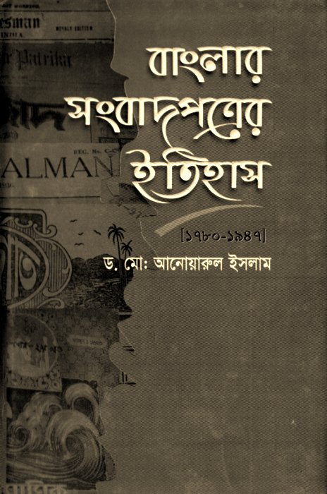
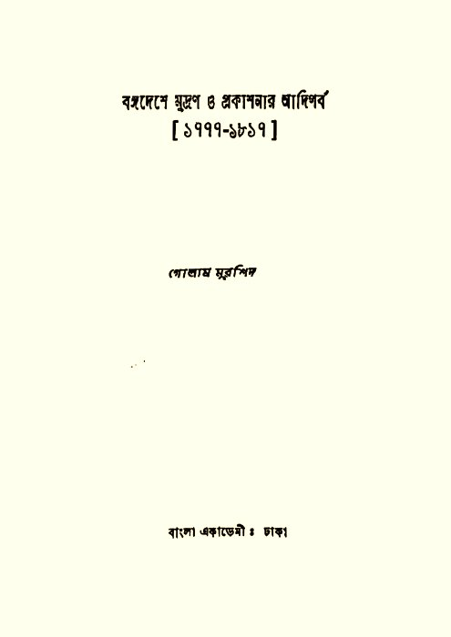
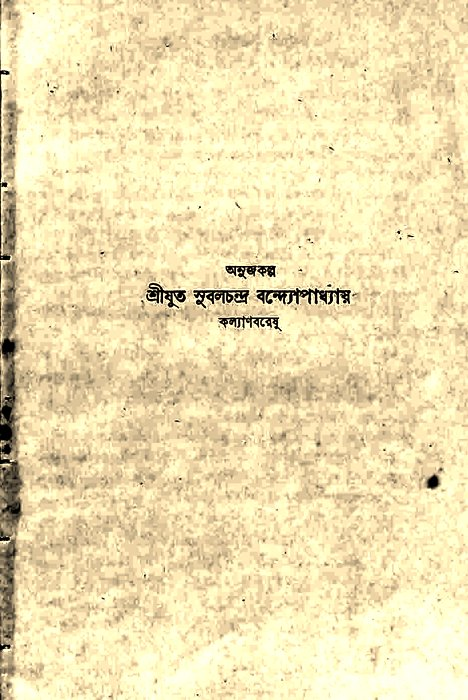
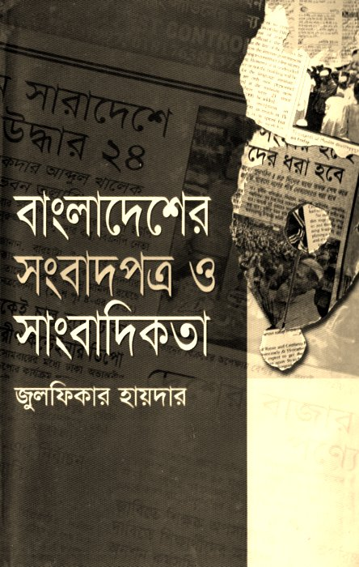

Two and a half centuries of the Bangladeshi press
Long before Bangladesh existed as a country, the printed word was already fighting its way into Bengal. Missionary presses, colonial gazettes, reformist pamphlets, and a distinctly Bengali Muslim literary press each took their turn shaping how people in this delta read about their world. This site follows that thread from Calcutta's first printing presses in the 1780s to the newsroom strikes that helped topple a dictator two centuries later.
Explore the timeline →The Timeline
কালরেখাFilter by what interests you. Cards flow left to right and wrap as the window narrows, so there is no side-scrolling to fight with.
All 54 Chapters, in Seven Parts
সাতটি খণ্ডThe full history is being built chapter by chapter. Click a part to fold it open and see its chapters; Chapters 1 through 7 are live now, the rest are coming next, in order.
The Source Shelf
উৎসThis history is built from a shelf of scanned books, academic dissertations, government reports, and bibliographies, supplemented with web research where noted. Every claim on this site traces back to one of these.
মুনতাসীর মামুন

ড. মো. আনোয়ারুল ইসলাম

গোলাম মুরশিদ

ব্রজেন্দ্রনাথ বন্দ্যোপাধ্যায়

জুলফিকার হায়দার